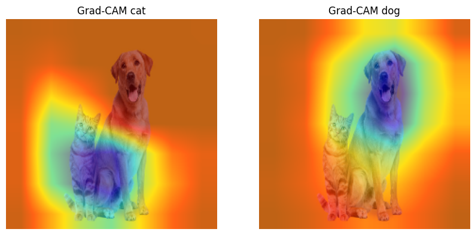

19. Explainable AI (XAI) and Grad-CAM#
In this session we will be covering
A brief recap of selected flagship CNN models
Deep dive into ResNet (2015)
What is Explainable AI (xAI): Getting started with Looking Feature maps in a CNN model
Class Activation Mapping (CAM) and Grad-CAM
19.1. A brief recap of flagship CNN models#
Convolutional Neural Networks (CNNs) have been a foundational technology in the field of computer vision. They have evolved significantly since their inception, with each iteration introducing new architectures, techniques, and concepts to improve performance, efficiency, and scalability. Here is a chronological overview of the most influential CNN architectures, along with their unique and important features. This article on CNN architectures in medium is a highly recommended quick read on various CNN models.
Here is a brief outline of the various models with its unique features
LeNet-5 (1998) laid the foundation for CNNs.
AlexNet (2012) demonstrated the power of deep learning on large datasets with 1000 classes ImageNet. This was also trained with drop out layers for regularization for the first time.
VGGNet (2014) emphasized the importance of depth and simplicity.
GoogLeNet (2014) introduced the concept of multi-scale feature learning through Inception modules.
ResNet (2015) tackled the vanishing gradient problem with residual connections. We will have a deep dive on this in the next section
DenseNet (2017) improved feature reuse with dense connections.
EfficientNet (2019) optimized scaling for efficiency and performance.
19.2. 1. LeNet-5 (1998):#
Introduced by: Yann LeCun et al.
Key paper: Gradient-based learning applied to document recognition
LeNet-5 is considered the first successful application of a convolutional neural network, designed primarily for handwritten digit classification (the MNIST dataset). It introduced the basic building blocks of CNNs, such as convolutional layers, pooling layers, and fully connected layers.
Key Features:
Convolutional and pooling layers: LeNet-5 used 2 convolutional layers followed by average pooling, allowing the network to learn spatial hierarchies in images.
Tanh activations: The network used the tanh activation function, which has since been replaced by rectified linear unit (ReLU) in modern architectures.
Small and shallow: LeNet-5 had only 60,000 parameters, making it lightweight and easy to train on limited hardware.
LeNet-5 established the basic building blocks of modern CNNs, even though it was a relatively simple model by today’s standards.

19.3. 2. AlexNet (2012):#
Introduced by: Alex Krizhevsky, Ilya Sutskever, and Geoffrey Hinton
Key paper: ImageNet Classification with Deep Convolutional Neural Networks
AlexNet marked a revolutionary moment in deep learning and computer vision by winning the 2012 ImageNet Large Scale Visual Recognition Challenge (ILSVRC) by a large margin. It showcased the power of deep learning when combined with modern hardware, specifically GPUs.
Key Features:
Deeper architecture: AlexNet had 8 layers (5 convolutional, 3 fully connected), compared to the 5 layers in LeNet-5, making it the first deep CNN.
ReLU activations: AlexNet replaced tanh and sigmoid activations with ReLU, significantly speeding up training and preventing the vanishing gradient problem.
Dropout regularization: To prevent overfitting, AlexNet introduced dropout layers in the fully connected layers, randomly deactivating neurons during training.
Data augmentation: Techniques like image translation and flipping were used to artificially increase the dataset size, further reducing overfitting.
Use of GPUs: AlexNet was one of the first models to be trained on GPUs, which significantly reduced training time and made deeper networks feasible.
AlexNet’s success reignited interest in deep learning and demonstrated the power of CNNs for large-scale image classification tasks.

19.4. 3. GoogLeNet/Inception v1 (2014):#
Introduced by: Christian Szegedy et al.
Key paper: Going Deeper with Convolutions
GoogLeNet, also known as Inception v1, introduced a radically new architecture that focused on computational efficiency and depth without drastically increasing the number of parameters.
Key Features:
Inception modules: The main innovation in GoogLeNet was the Inception module, which performed convolutions with different filter sizes (1x1, 3x3, 5x5) and max-pooling in parallel. These outputs were concatenated to capture multi-scale features.
1x1 convolutions: To reduce computational cost, GoogLeNet used 1x1 convolutions to reduce dimensionality before applying larger convolutions.
Global average pooling: Instead of fully connected layers at the end of the network, GoogLeNet used global average pooling, which reduced the parameter count and made the model more efficient.
Smaller parameter count: Despite being deeper than previous models, GoogLeNet had only around 5 million parameters, making it more efficient.
GoogLeNet pioneered the use of modular architectures in CNNs, leading to more efficient and scalable models.

19.5. 4. ResNet (2015):#
Introduced by: Kaiming He et al. (Microsoft)
Key paper: Deep Residual Learning for Image Recognition
ResNet (Residual Networks) solved a critical issue in deep learning: the vanishing gradient problem. As networks became deeper, it became difficult to propagate gradients through many layers. ResNet introduced residual connections to address this.
Key Features:
Residual connections: ResNet introduced shortcut or skip connections, where the input of one layer was added directly to the output of another layer. This allowed for gradients to flow more easily during backpropagation and helped train very deep networks.
Very deep networks: ResNet successfully trained networks with over 100 layers (e.g., ResNet-50, ResNet-101, ResNet-152), something that was previously unfeasible due to the vanishing gradient problem.
Bottleneck layers: To make deeper networks computationally feasible, ResNet used bottleneck layers that applied 1x1 convolutions to reduce the number of channels before applying larger convolutions.
ResNet became a foundational architecture for modern CNNs, as its residual learning concept has been adopted in many subsequent models.
19.6. 5. Inception v4 (2016)#
Introduced by: Christian Szegedy et al.
Key paper: Inception-v4, Inception-ResNet and the Impact of Residual Connections on Learning
Inception v4 built on the success of GoogLeNet/Inception v3 and ResNet but incorporated several optimizations to improve performance and reduce computational cost.
Key Features:
ResNet-style skip connections: Inception v4 introduced residual connections (similar to those in ResNet) to help gradient flow through the network and make deeper networks easier to train.
Inception-ResNet: A hybrid model that combines the Inception modules with ResNet-like shortcut connections. This allowed for the benefits of both networks: the efficiency of Inception and the ease of training provided by ResNet.
Label smoothing: A regularization technique that introduced uncertainty into the network’s predictions to prevent overfitting.
Residual connections: Shortcuts between layers to avoid vanishing gradient problems in deep networks
Inception modules: Similar to previous Inception modules, but now augmented with skip connections.
RMSProp optimizer: Inception v4 switched to the RMSProp optimizer, which showed improved performance over other optimizers like SGD.
Inception v4 continued the trend of modular design while improving computational efficiency and accuracy. There was also another network called ResNeXt proposed by Saining Xie et al. in the paper Aggregated Residual Transformations for Deep Neural Networks that extended the concepts introduced by ResNet by introducing a new dimension called cardinality (the number of parallel convolutional branches). ResNeXt provided a more flexible and scalable way to increase the model’s capacity, making it highly effective for various vision tasks.

19.7. 6. DenseNet (2017)#
Introduced by: Gao Huang et al.
Key paper: Densely Connected Convolutional Networks
DenseNet (Densely Connected Networks) addressed the issue of feature reuse in CNNs. Unlike previous architectures, DenseNet connected each layer to every other layer in a feed-forward fashion.
Key Features:
Dense connections: In DenseNet, each layer receives input from all preceding layers and passes its output to all subsequent layers. This allows for maximum feature reuse and helps to mitigate the vanishing gradient problem.
Compact model: Despite its dense connections, DenseNet is compact because the number of parameters is relatively small, due to the reuse of features across layers.
Improved gradient flow: Dense connections help improve gradient flow, making DenseNet easier to train than very deep networks without such connections.
DenseNet became popular for tasks where parameter efficiency was crucial.

19.8. 7. EfficientNet (2019)#
Introduced by: Mingxing Tan and Quoc V. Le
Key paper: EfficientNet: Rethinking Model Scaling for Convolutional Neural Networks
EfficientNet introduced a novel scaling approach that balanced network depth, width, and resolution to optimize performance while reducing computational cost.
Key Features:
Compound scaling: EfficientNet used a compound scaling method that uniformly scales depth, width, and resolution. This was shown to be more effective than simply scaling any one dimension.
Efficient building blocks: Based on MobileNet’s inverted bottleneck blocks, EfficientNet used squeeze-and-excitation modules to improve the efficiency of feature extraction.
State-of-the-art performance: EfficientNet achieved state-of-the-art results on ImageNet with far fewer parameters than models like ResNet and Inception.
EfficientNet is widely used in resource-constrained environments and has become a go-to model for tasks requiring high accuracy with low computational overhead.

19.9. 2. Deep dive into ResNet-18#
ResNet came with different flavours.

ResNet-18 has a total of 18 layers, which include convolutional layers and fully connected layers, structured as follows:
Input: Image size is typically $224 \times 224$.
First Layer (Convolution + MaxPool):
7x7 convolution, 64 filters, stride 2, followed by a \(3\times 3\) max pooling layer.
Residual Blocks: These are the core building blocks. Each residual block consists of two convolutional layers followed by batch normalization and ReLU activation. ResNet-18 contains 8 of these residual blocks (4 stages with 2 residual blocks per stage):
Stage 1: 2 residual blocks, each with two 3x3 convolutions, 64 filters.
Stage 2: 2 residual blocks, each with two 3x3 convolutions, 128 filters.
Stage 3: 2 residual blocks, each with two 3x3 convolutions, 256 filters.
Stage 4: 2 residual blocks, each with two 3x3 convolutions, 512 filters.
In each of these stages, the first block increases the number of filters and reduces the spatial dimensions (when moving between stages), while the second block maintains the dimensions. When dimensions change, the identity connection (skip connection) is adjusted using a \(1\times 1\) convolution.
Fully Connected Layer:
After the final residual block, the network applies global average pooling, followed by a fully connected (dense) layer with 1000 output units (for classification tasks like ImageNet).
19.10. Architecture Summary (Layer-by-Layer):#
Layer |
Output Size |
Details |
|---|---|---|
Conv1 |
112x112 |
7x7, 64, stride 2 |
Max Pool |
56x56 |
3x3 max pool, stride 2 |
Layer 1 |
56x56 |
2 x (3x3, 64) |
Layer 2 |
28x28 |
2 x (3x3, 128), stride 2 |
Layer 3 |
14x14 |
2 x (3x3, 256), stride 2 |
Layer 4 |
7x7 |
2 x (3x3, 512), stride 2 |
Avg Pool |
1x1 |
Global average pool |
FC |
1,000 |
Fully connected layer, 1,000 classes (ImageNet) |

19.11. Residual Connections#
Residual connections and layers are fundamental components in the design of ResNet-18 (Residual Network with 18 layers), which is one of the architectures proposed to solve the problem of vanishing gradients and allow the training of much deeper networks. A residual connection, or a skip connection, is the hallmark feature of ResNet. The idea behind residual connections is to allow information to bypass one or more layers by adding the input directly to the output of a block of layers, creating a shortcut. This helps to alleviate the issue of vanishing or exploding gradients, enabling more effective training of deep networks.
A residual block typically looks like this:
Input (x) → Series of transformations (F(x)) → Output
Instead of only passing through the layers, ResNet adds a shortcut connection:
\[ \text{Output} = F(x) + x \]where \(F(x)\) is the result of a sequence of operations like convolution, batch normalization, and ReLU activation. The identity connection (the term \(x\)) allows gradients to flow more easily during backpropagation, preventing them from becoming too small.
19.12. How Residual Connections Work in ResNet-18#
Each residual block in ResNet-18 has a structure like this:
Convolution 1 (3x3) → BatchNorm → ReLU → Convolution 2 (3x3) → BatchNorm.
The input to the block \(x\) is added to the output of the block \(F(x)\):
\[ \text{Output} = F(x) + x \]Then, a ReLU activation is applied to the final output.
19.12.1. Key Benefits of Residual Connections:#
Ease of optimization: Residual connections help gradients flow through deeper networks, making optimization easier.
Addressing vanishing gradients: By adding skip connections, gradients have a clearer path during backpropagation, preventing them from becoming too small (vanishing gradients problem).
Training deeper networks: With residual connections, ResNet enables the training of very deep networks, such as ResNet-50, ResNet-101, and beyond, without suffering from significant degradation in performance.
In ResNet-18, this combination of residual blocks and skip connections allows the model to be trained efficiently, even with a depth of 18 layers, while still being less prone to overfitting and gradient-related issues.
19.13. Batch Normalization#
Batch normalization is a technique that normalizes the input to each layer in a neural network, improving the stability and speed of training. It was introduced to address the problem of internal covariate shift, where the distribution of inputs to a layer changes during training, causing slower convergence and making it harder to train deep networks.
Batch normalization works by normalizing the input of each mini-batch to have a mean of 0 and a standard deviation of 1. This ensures that the inputs to each layer have consistent distributions throughout the training process.
For an input (x) to a layer, batch normalization performs the following steps:
Compute mean and variance for the mini-batch:
\[ \mu_B = \frac{1}{m} \sum_{i=1}^{m} x_i \]\[ \sigma_B^2 = \frac{1}{m} \sum_{i=1}^{m} (x_i - \mu_B)^2 \]where \(m\) is the number of samples in the mini-batch, \(\mu_B\) is the batch mean, and \(\sigma_B^2\) is the batch variance.
Normalize each input by subtracting the mean and dividing by the standard deviation:
\[ \hat{x}_i = \frac{x_i - \mu_B}{\sqrt{\sigma_B^2 + \epsilon}} \]where \(\epsilon\) is a small constant added to avoid division by zero.
Apply learnable scaling and shifting parameters \(\gamma\) and \(\beta\), which allow the network to learn the optimal scale and shift for each input:
\[ y_i = \gamma \hat{x}_i + \beta \]These parameters enable the model to recover the original distribution of the inputs if necessary.
19.13.1. Benefits of Batch Normalization#
Batch normalization provides several key advantages:
Faster Training: By normalizing the inputs, the network can use higher learning rates without causing gradients to explode or vanish. This speeds up the convergence of the model.
Reduced Sensitivity to Initialization: Neural networks typically need careful weight initialization, but batch normalization reduces the sensitivity of the network to the initial parameters.
Regularization: Batch normalization adds a slight regularization effect because the noise introduced by mini-batch statistics during training acts as a form of stochastic noise, reducing the need for other regularization techniques like dropout.
Alleviates Internal Covariate Shift: By keeping the distribution of the inputs to each layer more stable during training, batch normalization helps the network converge more smoothly.
19.13.2. How Batch Normalization Works in Practice#
Batch normalization is typically applied after the linear transformation (convolution or fully connected layer) but before the non-linear activation function (like ReLU or Sigmoid). This sequence allows batch normalization to normalize the activations that will be fed into the non-linearity.
In a layer where batch normalization is applied, the order of operations is typically:
Convolution/Fully Connected Layer
Batch Normalization
Activation Function (ReLU, Sigmoid, etc.)
19.13.3. Batch Normalization During Training vs Inference#
During training: The mean and variance are computed for each mini-batch. The running averages of the mean and variance are maintained to be used later for inference.
During inference: Instead of using the statistics of the current batch, the running mean and variance (computed during training) are used to normalize the inputs. This ensures consistency between training and inference.
19.13.4. Example of Batch Normalization in ResNet-18#
In ResNet-18, batch normalization is applied after every convolution layer and before the ReLU activation. Each convolutional layer produces output feature maps, and batch normalization ensures that these feature maps have a stable distribution of values, improving training dynamics.
For example, in a residual block:
Convolution 1 → BatchNorm → ReLU → Convolution 2 → BatchNorm → Addition with Skip Connection → ReLU.
!pip install torch torchvision matplotlib
Requirement already satisfied: torch in /usr/local/lib/python3.10/dist-packages (2.4.1+cu121)
Requirement already satisfied: torchvision in /usr/local/lib/python3.10/dist-packages (0.19.1+cu121)
Requirement already satisfied: matplotlib in /usr/local/lib/python3.10/dist-packages (3.7.1)
Requirement already satisfied: filelock in /usr/local/lib/python3.10/dist-packages (from torch) (3.16.1)
Requirement already satisfied: typing-extensions>=4.8.0 in /usr/local/lib/python3.10/dist-packages (from torch) (4.12.2)
Requirement already satisfied: sympy in /usr/local/lib/python3.10/dist-packages (from torch) (1.13.3)
Requirement already satisfied: networkx in /usr/local/lib/python3.10/dist-packages (from torch) (3.4)
Requirement already satisfied: jinja2 in /usr/local/lib/python3.10/dist-packages (from torch) (3.1.4)
Requirement already satisfied: fsspec in /usr/local/lib/python3.10/dist-packages (from torch) (2024.6.1)
Requirement already satisfied: numpy in /usr/local/lib/python3.10/dist-packages (from torchvision) (1.26.4)
Requirement already satisfied: pillow!=8.3.*,>=5.3.0 in /usr/local/lib/python3.10/dist-packages (from torchvision) (10.4.0)
Requirement already satisfied: contourpy>=1.0.1 in /usr/local/lib/python3.10/dist-packages (from matplotlib) (1.3.0)
Requirement already satisfied: cycler>=0.10 in /usr/local/lib/python3.10/dist-packages (from matplotlib) (0.12.1)
Requirement already satisfied: fonttools>=4.22.0 in /usr/local/lib/python3.10/dist-packages (from matplotlib) (4.54.1)
Requirement already satisfied: kiwisolver>=1.0.1 in /usr/local/lib/python3.10/dist-packages (from matplotlib) (1.4.7)
Requirement already satisfied: packaging>=20.0 in /usr/local/lib/python3.10/dist-packages (from matplotlib) (24.1)
Requirement already satisfied: pyparsing>=2.3.1 in /usr/local/lib/python3.10/dist-packages (from matplotlib) (3.1.4)
Requirement already satisfied: python-dateutil>=2.7 in /usr/local/lib/python3.10/dist-packages (from matplotlib) (2.8.2)
Requirement already satisfied: six>=1.5 in /usr/local/lib/python3.10/dist-packages (from python-dateutil>=2.7->matplotlib) (1.16.0)
Requirement already satisfied: MarkupSafe>=2.0 in /usr/local/lib/python3.10/dist-packages (from jinja2->torch) (3.0.1)
Requirement already satisfied: mpmath<1.4,>=1.1.0 in /usr/local/lib/python3.10/dist-packages (from sympy->torch) (1.3.0)
from torchvision.models import list_models
# torchvision provides a number of models that one can explore.
# check out https://pytorch.org/vision/stable/models.html
print (*list_models(), sep = "\n")
alexnet
convnext_base
convnext_large
convnext_small
convnext_tiny
deeplabv3_mobilenet_v3_large
deeplabv3_resnet101
deeplabv3_resnet50
densenet121
densenet161
densenet169
densenet201
efficientnet_b0
efficientnet_b1
efficientnet_b2
efficientnet_b3
efficientnet_b4
efficientnet_b5
efficientnet_b6
efficientnet_b7
efficientnet_v2_l
efficientnet_v2_m
efficientnet_v2_s
fasterrcnn_mobilenet_v3_large_320_fpn
fasterrcnn_mobilenet_v3_large_fpn
fasterrcnn_resnet50_fpn
fasterrcnn_resnet50_fpn_v2
fcn_resnet101
fcn_resnet50
fcos_resnet50_fpn
googlenet
inception_v3
keypointrcnn_resnet50_fpn
lraspp_mobilenet_v3_large
maskrcnn_resnet50_fpn
maskrcnn_resnet50_fpn_v2
maxvit_t
mc3_18
mnasnet0_5
mnasnet0_75
mnasnet1_0
mnasnet1_3
mobilenet_v2
mobilenet_v3_large
mobilenet_v3_small
mvit_v1_b
mvit_v2_s
quantized_googlenet
quantized_inception_v3
quantized_mobilenet_v2
quantized_mobilenet_v3_large
quantized_resnet18
quantized_resnet50
quantized_resnext101_32x8d
quantized_resnext101_64x4d
quantized_shufflenet_v2_x0_5
quantized_shufflenet_v2_x1_0
quantized_shufflenet_v2_x1_5
quantized_shufflenet_v2_x2_0
r2plus1d_18
r3d_18
raft_large
raft_small
regnet_x_16gf
regnet_x_1_6gf
regnet_x_32gf
regnet_x_3_2gf
regnet_x_400mf
regnet_x_800mf
regnet_x_8gf
regnet_y_128gf
regnet_y_16gf
regnet_y_1_6gf
regnet_y_32gf
regnet_y_3_2gf
regnet_y_400mf
regnet_y_800mf
regnet_y_8gf
resnet101
resnet152
resnet18
resnet34
resnet50
resnext101_32x8d
resnext101_64x4d
resnext50_32x4d
retinanet_resnet50_fpn
retinanet_resnet50_fpn_v2
s3d
shufflenet_v2_x0_5
shufflenet_v2_x1_0
shufflenet_v2_x1_5
shufflenet_v2_x2_0
squeezenet1_0
squeezenet1_1
ssd300_vgg16
ssdlite320_mobilenet_v3_large
swin3d_b
swin3d_s
swin3d_t
swin_b
swin_s
swin_t
swin_v2_b
swin_v2_s
swin_v2_t
vgg11
vgg11_bn
vgg13
vgg13_bn
vgg16
vgg16_bn
vgg19
vgg19_bn
vit_b_16
vit_b_32
vit_h_14
vit_l_16
vit_l_32
wide_resnet101_2
wide_resnet50_2
import torch
import torch.nn.functional as F
from torchvision import models, transforms
from torchvision.models import ResNet18_Weights
from PIL import Image
import matplotlib.pyplot as plt
import numpy as np
# Load a pre-trained model
model = models.resnet18(weights=ResNet18_Weights.IMAGENET1K_V1)
# Lets look into the model
# eval() Sets the module in evaluation mode.
# This has any effect only on certain modules.
# See documentations of particular modules for details of their behaviors in training/evaluation mode,
# if they are affected, e.g. Dropout, BatchNorm, etc.
# https://discuss.pytorch.org/t/where-to-use-model-eval/89200
model.eval()
ResNet(
(conv1): Conv2d(3, 64, kernel_size=(7, 7), stride=(2, 2), padding=(3, 3), bias=False)
(bn1): BatchNorm2d(64, eps=1e-05, momentum=0.1, affine=True, track_running_stats=True)
(relu): ReLU(inplace=True)
(maxpool): MaxPool2d(kernel_size=3, stride=2, padding=1, dilation=1, ceil_mode=False)
(layer1): Sequential(
(0): BasicBlock(
(conv1): Conv2d(64, 64, kernel_size=(3, 3), stride=(1, 1), padding=(1, 1), bias=False)
(bn1): BatchNorm2d(64, eps=1e-05, momentum=0.1, affine=True, track_running_stats=True)
(relu): ReLU(inplace=True)
(conv2): Conv2d(64, 64, kernel_size=(3, 3), stride=(1, 1), padding=(1, 1), bias=False)
(bn2): BatchNorm2d(64, eps=1e-05, momentum=0.1, affine=True, track_running_stats=True)
)
(1): BasicBlock(
(conv1): Conv2d(64, 64, kernel_size=(3, 3), stride=(1, 1), padding=(1, 1), bias=False)
(bn1): BatchNorm2d(64, eps=1e-05, momentum=0.1, affine=True, track_running_stats=True)
(relu): ReLU(inplace=True)
(conv2): Conv2d(64, 64, kernel_size=(3, 3), stride=(1, 1), padding=(1, 1), bias=False)
(bn2): BatchNorm2d(64, eps=1e-05, momentum=0.1, affine=True, track_running_stats=True)
)
)
(layer2): Sequential(
(0): BasicBlock(
(conv1): Conv2d(64, 128, kernel_size=(3, 3), stride=(2, 2), padding=(1, 1), bias=False)
(bn1): BatchNorm2d(128, eps=1e-05, momentum=0.1, affine=True, track_running_stats=True)
(relu): ReLU(inplace=True)
(conv2): Conv2d(128, 128, kernel_size=(3, 3), stride=(1, 1), padding=(1, 1), bias=False)
(bn2): BatchNorm2d(128, eps=1e-05, momentum=0.1, affine=True, track_running_stats=True)
(downsample): Sequential(
(0): Conv2d(64, 128, kernel_size=(1, 1), stride=(2, 2), bias=False)
(1): BatchNorm2d(128, eps=1e-05, momentum=0.1, affine=True, track_running_stats=True)
)
)
(1): BasicBlock(
(conv1): Conv2d(128, 128, kernel_size=(3, 3), stride=(1, 1), padding=(1, 1), bias=False)
(bn1): BatchNorm2d(128, eps=1e-05, momentum=0.1, affine=True, track_running_stats=True)
(relu): ReLU(inplace=True)
(conv2): Conv2d(128, 128, kernel_size=(3, 3), stride=(1, 1), padding=(1, 1), bias=False)
(bn2): BatchNorm2d(128, eps=1e-05, momentum=0.1, affine=True, track_running_stats=True)
)
)
(layer3): Sequential(
(0): BasicBlock(
(conv1): Conv2d(128, 256, kernel_size=(3, 3), stride=(2, 2), padding=(1, 1), bias=False)
(bn1): BatchNorm2d(256, eps=1e-05, momentum=0.1, affine=True, track_running_stats=True)
(relu): ReLU(inplace=True)
(conv2): Conv2d(256, 256, kernel_size=(3, 3), stride=(1, 1), padding=(1, 1), bias=False)
(bn2): BatchNorm2d(256, eps=1e-05, momentum=0.1, affine=True, track_running_stats=True)
(downsample): Sequential(
(0): Conv2d(128, 256, kernel_size=(1, 1), stride=(2, 2), bias=False)
(1): BatchNorm2d(256, eps=1e-05, momentum=0.1, affine=True, track_running_stats=True)
)
)
(1): BasicBlock(
(conv1): Conv2d(256, 256, kernel_size=(3, 3), stride=(1, 1), padding=(1, 1), bias=False)
(bn1): BatchNorm2d(256, eps=1e-05, momentum=0.1, affine=True, track_running_stats=True)
(relu): ReLU(inplace=True)
(conv2): Conv2d(256, 256, kernel_size=(3, 3), stride=(1, 1), padding=(1, 1), bias=False)
(bn2): BatchNorm2d(256, eps=1e-05, momentum=0.1, affine=True, track_running_stats=True)
)
)
(layer4): Sequential(
(0): BasicBlock(
(conv1): Conv2d(256, 512, kernel_size=(3, 3), stride=(2, 2), padding=(1, 1), bias=False)
(bn1): BatchNorm2d(512, eps=1e-05, momentum=0.1, affine=True, track_running_stats=True)
(relu): ReLU(inplace=True)
(conv2): Conv2d(512, 512, kernel_size=(3, 3), stride=(1, 1), padding=(1, 1), bias=False)
(bn2): BatchNorm2d(512, eps=1e-05, momentum=0.1, affine=True, track_running_stats=True)
(downsample): Sequential(
(0): Conv2d(256, 512, kernel_size=(1, 1), stride=(2, 2), bias=False)
(1): BatchNorm2d(512, eps=1e-05, momentum=0.1, affine=True, track_running_stats=True)
)
)
(1): BasicBlock(
(conv1): Conv2d(512, 512, kernel_size=(3, 3), stride=(1, 1), padding=(1, 1), bias=False)
(bn1): BatchNorm2d(512, eps=1e-05, momentum=0.1, affine=True, track_running_stats=True)
(relu): ReLU(inplace=True)
(conv2): Conv2d(512, 512, kernel_size=(3, 3), stride=(1, 1), padding=(1, 1), bias=False)
(bn2): BatchNorm2d(512, eps=1e-05, momentum=0.1, affine=True, track_running_stats=True)
)
)
(avgpool): AdaptiveAvgPool2d(output_size=(1, 1))
(fc): Linear(in_features=512, out_features=1000, bias=True)
)
19.14. 3. Introduction to Explainable AI (XAI)#
Artificial Intelligence (AI) has become ubiquitous in many industries, from healthcare to finance, where decisions made by AI systems can have significant impacts. However, many AI models, especially deep learning models, are often considered “black boxes†because they do not provide insights into how they arrive at their predictions. This lack of transparency leads to a critical question:
How do we trust AI systems if we cannot understand their decision-making process?
Explainable AI (XAI) seeks to address this issue by providing methods to interpret and explain the decisions of AI models. With XAI, we can:
Increase trust and accountability of AI models
Detect biases or potential errors in predictions
Comply with regulatory requirements, especially in sensitive domains like healthcare and finance
We will explore one such method: Class Activation Mapping (CAM), particularly Gradient-weighted Class Activation Mapping (Grad-CAM), which is used for explaining the predictions of Convolutional Neural Networks (CNNs).
19.15. Diving deep into torchvision.models#
We will learn on how to get various aspects of a built model in pytorch. We will be using ResNet in torchvision.models for this purpose.
from torchvision.models import resnet18, ResNet18_Weights
model = resnet18(weights=ResNet18_Weights.IMAGENET1K_V1)
for child in model.named_children():
print (f"name: {child[0]}, type: {type(child[-1])}")
name: conv1, type: <class 'torch.nn.modules.conv.Conv2d'>
name: bn1, type: <class 'torch.nn.modules.batchnorm.BatchNorm2d'>
name: relu, type: <class 'torch.nn.modules.activation.ReLU'>
name: maxpool, type: <class 'torch.nn.modules.pooling.MaxPool2d'>
name: layer1, type: <class 'torch.nn.modules.container.Sequential'>
name: layer2, type: <class 'torch.nn.modules.container.Sequential'>
name: layer3, type: <class 'torch.nn.modules.container.Sequential'>
name: layer4, type: <class 'torch.nn.modules.container.Sequential'>
name: avgpool, type: <class 'torch.nn.modules.pooling.AdaptiveAvgPool2d'>
name: fc, type: <class 'torch.nn.modules.linear.Linear'>
# You can pick out all the modules from the model as
# check out this https://pytorch.org/docs/stable/notes/modules.html
for name, layer in model.named_modules():
print (f"name: {name}, type: {type(layer)}")
name: , type: <class 'torchvision.models.resnet.ResNet'>
name: conv1, type: <class 'torch.nn.modules.conv.Conv2d'>
name: bn1, type: <class 'torch.nn.modules.batchnorm.BatchNorm2d'>
name: relu, type: <class 'torch.nn.modules.activation.ReLU'>
name: maxpool, type: <class 'torch.nn.modules.pooling.MaxPool2d'>
name: layer1, type: <class 'torch.nn.modules.container.Sequential'>
name: layer1.0, type: <class 'torchvision.models.resnet.BasicBlock'>
name: layer1.0.conv1, type: <class 'torch.nn.modules.conv.Conv2d'>
name: layer1.0.bn1, type: <class 'torch.nn.modules.batchnorm.BatchNorm2d'>
name: layer1.0.relu, type: <class 'torch.nn.modules.activation.ReLU'>
name: layer1.0.conv2, type: <class 'torch.nn.modules.conv.Conv2d'>
name: layer1.0.bn2, type: <class 'torch.nn.modules.batchnorm.BatchNorm2d'>
name: layer1.1, type: <class 'torchvision.models.resnet.BasicBlock'>
name: layer1.1.conv1, type: <class 'torch.nn.modules.conv.Conv2d'>
name: layer1.1.bn1, type: <class 'torch.nn.modules.batchnorm.BatchNorm2d'>
name: layer1.1.relu, type: <class 'torch.nn.modules.activation.ReLU'>
name: layer1.1.conv2, type: <class 'torch.nn.modules.conv.Conv2d'>
name: layer1.1.bn2, type: <class 'torch.nn.modules.batchnorm.BatchNorm2d'>
name: layer2, type: <class 'torch.nn.modules.container.Sequential'>
name: layer2.0, type: <class 'torchvision.models.resnet.BasicBlock'>
name: layer2.0.conv1, type: <class 'torch.nn.modules.conv.Conv2d'>
name: layer2.0.bn1, type: <class 'torch.nn.modules.batchnorm.BatchNorm2d'>
name: layer2.0.relu, type: <class 'torch.nn.modules.activation.ReLU'>
name: layer2.0.conv2, type: <class 'torch.nn.modules.conv.Conv2d'>
name: layer2.0.bn2, type: <class 'torch.nn.modules.batchnorm.BatchNorm2d'>
name: layer2.0.downsample, type: <class 'torch.nn.modules.container.Sequential'>
name: layer2.0.downsample.0, type: <class 'torch.nn.modules.conv.Conv2d'>
name: layer2.0.downsample.1, type: <class 'torch.nn.modules.batchnorm.BatchNorm2d'>
name: layer2.1, type: <class 'torchvision.models.resnet.BasicBlock'>
name: layer2.1.conv1, type: <class 'torch.nn.modules.conv.Conv2d'>
name: layer2.1.bn1, type: <class 'torch.nn.modules.batchnorm.BatchNorm2d'>
name: layer2.1.relu, type: <class 'torch.nn.modules.activation.ReLU'>
name: layer2.1.conv2, type: <class 'torch.nn.modules.conv.Conv2d'>
name: layer2.1.bn2, type: <class 'torch.nn.modules.batchnorm.BatchNorm2d'>
name: layer3, type: <class 'torch.nn.modules.container.Sequential'>
name: layer3.0, type: <class 'torchvision.models.resnet.BasicBlock'>
name: layer3.0.conv1, type: <class 'torch.nn.modules.conv.Conv2d'>
name: layer3.0.bn1, type: <class 'torch.nn.modules.batchnorm.BatchNorm2d'>
name: layer3.0.relu, type: <class 'torch.nn.modules.activation.ReLU'>
name: layer3.0.conv2, type: <class 'torch.nn.modules.conv.Conv2d'>
name: layer3.0.bn2, type: <class 'torch.nn.modules.batchnorm.BatchNorm2d'>
name: layer3.0.downsample, type: <class 'torch.nn.modules.container.Sequential'>
name: layer3.0.downsample.0, type: <class 'torch.nn.modules.conv.Conv2d'>
name: layer3.0.downsample.1, type: <class 'torch.nn.modules.batchnorm.BatchNorm2d'>
name: layer3.1, type: <class 'torchvision.models.resnet.BasicBlock'>
name: layer3.1.conv1, type: <class 'torch.nn.modules.conv.Conv2d'>
name: layer3.1.bn1, type: <class 'torch.nn.modules.batchnorm.BatchNorm2d'>
name: layer3.1.relu, type: <class 'torch.nn.modules.activation.ReLU'>
name: layer3.1.conv2, type: <class 'torch.nn.modules.conv.Conv2d'>
name: layer3.1.bn2, type: <class 'torch.nn.modules.batchnorm.BatchNorm2d'>
name: layer4, type: <class 'torch.nn.modules.container.Sequential'>
name: layer4.0, type: <class 'torchvision.models.resnet.BasicBlock'>
name: layer4.0.conv1, type: <class 'torch.nn.modules.conv.Conv2d'>
name: layer4.0.bn1, type: <class 'torch.nn.modules.batchnorm.BatchNorm2d'>
name: layer4.0.relu, type: <class 'torch.nn.modules.activation.ReLU'>
name: layer4.0.conv2, type: <class 'torch.nn.modules.conv.Conv2d'>
name: layer4.0.bn2, type: <class 'torch.nn.modules.batchnorm.BatchNorm2d'>
name: layer4.0.downsample, type: <class 'torch.nn.modules.container.Sequential'>
name: layer4.0.downsample.0, type: <class 'torch.nn.modules.conv.Conv2d'>
name: layer4.0.downsample.1, type: <class 'torch.nn.modules.batchnorm.BatchNorm2d'>
name: layer4.1, type: <class 'torchvision.models.resnet.BasicBlock'>
name: layer4.1.conv1, type: <class 'torch.nn.modules.conv.Conv2d'>
name: layer4.1.bn1, type: <class 'torch.nn.modules.batchnorm.BatchNorm2d'>
name: layer4.1.relu, type: <class 'torch.nn.modules.activation.ReLU'>
name: layer4.1.conv2, type: <class 'torch.nn.modules.conv.Conv2d'>
name: layer4.1.bn2, type: <class 'torch.nn.modules.batchnorm.BatchNorm2d'>
name: avgpool, type: <class 'torch.nn.modules.pooling.AdaptiveAvgPool2d'>
name: fc, type: <class 'torch.nn.modules.linear.Linear'>
Each residual block can have an optional downsample layer if the input and output dimensions of the block do not match. Downsampling is typically used to:
Reduce the spatial size (height and width) of the feature maps
Match the input and output feature map dimensions when their sizes differ.
In the case of layer4, it applies a downsampling operation because the input dimensions need to be adjusted before being passed into the residual block.
Breaking Down layer4.0.downsample.0:
layer4: Refers to the fourth and final group of residual blocks in ResNet18. Each of these layers contains multiple residual blocks, and layer4 reduces the spatial dimensions significantly.layer4.0: This refers to the first residual block in layer4. The indexing (.0) means it’s the first block in this layer.downsample: The downsample operation is included in some residual blocks to match the dimensions between the block’s input and output. This operation is necessary because when the spatial dimensions of the input change (typically through strided convolutions), the residual connection also needs to downsample the input to make the addition possible.downsample.0: This indicates the first layer inside the downsample operation. In most cases, this layer is a convolutional layer (Conv2d) that performs the downsampling. In ResNet, downsampling is often done using a convolution with a stride of 2, which halves the spatial dimensions (height and width) of the feature maps.
# Accessing layer4.0.downsample.0
print (model.layer4[0].conv1)
print (model.layer4[0].conv2)
print(model.layer4[0].downsample[0])
Conv2d(256, 512, kernel_size=(3, 3), stride=(2, 2), padding=(1, 1), bias=False)
Conv2d(512, 512, kernel_size=(3, 3), stride=(1, 1), padding=(1, 1), bias=False)
Conv2d(256, 512, kernel_size=(1, 1), stride=(2, 2), bias=False)
# Let us store all the convolutional layers and their weights.
model_weights = {}
conv_layers = {}
# one can directly loop through all named modules
for name, layer in model.named_modules():
if isinstance(layer, torch.nn.Conv2d) and "downsample" not in name:
conv_layers[name] = layer
model_weights[name] = layer.weight
print (f"{name}, \n : {conv_layers[name]} \n : weight shape: {layer.weight.shape}")
conv1,
: Conv2d(3, 64, kernel_size=(7, 7), stride=(2, 2), padding=(3, 3), bias=False)
: weight shape: torch.Size([64, 3, 7, 7])
layer1.0.conv1,
: Conv2d(64, 64, kernel_size=(3, 3), stride=(1, 1), padding=(1, 1), bias=False)
: weight shape: torch.Size([64, 64, 3, 3])
layer1.0.conv2,
: Conv2d(64, 64, kernel_size=(3, 3), stride=(1, 1), padding=(1, 1), bias=False)
: weight shape: torch.Size([64, 64, 3, 3])
layer1.1.conv1,
: Conv2d(64, 64, kernel_size=(3, 3), stride=(1, 1), padding=(1, 1), bias=False)
: weight shape: torch.Size([64, 64, 3, 3])
layer1.1.conv2,
: Conv2d(64, 64, kernel_size=(3, 3), stride=(1, 1), padding=(1, 1), bias=False)
: weight shape: torch.Size([64, 64, 3, 3])
layer2.0.conv1,
: Conv2d(64, 128, kernel_size=(3, 3), stride=(2, 2), padding=(1, 1), bias=False)
: weight shape: torch.Size([128, 64, 3, 3])
layer2.0.conv2,
: Conv2d(128, 128, kernel_size=(3, 3), stride=(1, 1), padding=(1, 1), bias=False)
: weight shape: torch.Size([128, 128, 3, 3])
layer2.1.conv1,
: Conv2d(128, 128, kernel_size=(3, 3), stride=(1, 1), padding=(1, 1), bias=False)
: weight shape: torch.Size([128, 128, 3, 3])
layer2.1.conv2,
: Conv2d(128, 128, kernel_size=(3, 3), stride=(1, 1), padding=(1, 1), bias=False)
: weight shape: torch.Size([128, 128, 3, 3])
layer3.0.conv1,
: Conv2d(128, 256, kernel_size=(3, 3), stride=(2, 2), padding=(1, 1), bias=False)
: weight shape: torch.Size([256, 128, 3, 3])
layer3.0.conv2,
: Conv2d(256, 256, kernel_size=(3, 3), stride=(1, 1), padding=(1, 1), bias=False)
: weight shape: torch.Size([256, 256, 3, 3])
layer3.1.conv1,
: Conv2d(256, 256, kernel_size=(3, 3), stride=(1, 1), padding=(1, 1), bias=False)
: weight shape: torch.Size([256, 256, 3, 3])
layer3.1.conv2,
: Conv2d(256, 256, kernel_size=(3, 3), stride=(1, 1), padding=(1, 1), bias=False)
: weight shape: torch.Size([256, 256, 3, 3])
layer4.0.conv1,
: Conv2d(256, 512, kernel_size=(3, 3), stride=(2, 2), padding=(1, 1), bias=False)
: weight shape: torch.Size([512, 256, 3, 3])
layer4.0.conv2,
: Conv2d(512, 512, kernel_size=(3, 3), stride=(1, 1), padding=(1, 1), bias=False)
: weight shape: torch.Size([512, 512, 3, 3])
layer4.1.conv1,
: Conv2d(512, 512, kernel_size=(3, 3), stride=(1, 1), padding=(1, 1), bias=False)
: weight shape: torch.Size([512, 512, 3, 3])
layer4.1.conv2,
: Conv2d(512, 512, kernel_size=(3, 3), stride=(1, 1), padding=(1, 1), bias=False)
: weight shape: torch.Size([512, 512, 3, 3])
# lets visualize all the weights from the first input layer
import matplotlib.pyplot as plt
import numpy as np
fig, axes = plt.subplots(nrows=8, ncols=8,
sharex = True, sharey = True,
figsize=(10, 10)
)
fig.suptitle("Weights from the first input layer and 0th channel", fontsize=16)
cnt = 0
for _, ax in np.ndenumerate(axes):
ax.imshow(model_weights['conv1'][cnt, 0, :, :].detach().numpy(), cmap='gray')
ax.axis('off')
cnt = cnt + 1
plt.show()
19.16. Looking into the feature maps.#
One of the ways to start making sense of a CNN model is to look into the convolutions dones at each stage of the CNN. One can pass an input and try to visualize the image as it passes through various convolutions. As the image passes through this CNN model, the spatial dimensions keeps going down.
Let us first load and image of a cat. And try to visualize what happens to it as it pipes down in to the ResNet model
# Lets load an image
cat_url = "https://upload.wikimedia.org/wikipedia/commons/thumb/4/4d/Cat_November_2010-1a.jpg/449px-Cat_November_2010-1a.jpg"
import requests
from PIL import Image
from io import BytesIO
import matplotlib.pyplot as plt
import cv2
def fetch_and_transform(url, transform, image = "image.jpg"):
headers = {
'User-Agent': 'Mozilla/5.0 (Windows NT 10.0; Win64; x64) AppleWebKit/537.36 (KHTML, like Gecko) Chrome/114.0.0.0 Safari/537.36'
# Replace with your desired User-Agent string
}
response = requests.get(url, stream = True, headers = headers)
response.raise_for_status()
img = Image.open(BytesIO(response.content))
img.save(image)
imgtensor = transform(img).unsqueeze(0)
img = cv2.resize(np.array(img), imgtensor.shape[2:])
plt.imshow(img)
plt.axis('off')
plt.show()
return img, imgtensor
transform = transforms.Compose([
transforms.Resize((224, 224)),
transforms.ToTensor(),
transforms.Normalize(mean=[0.485, 0.456, 0.406], std=[0.229, 0.224, 0.225])
])
img, imgtensor = fetch_and_transform(cat_url, transform)
print (imgtensor.size())
print (img.shape)
torch.Size([1, 3, 224, 224])
(224, 224, 3)
# @title Question: What is the output dimension when the above image is passed through first input layer
print (f"Image dimension: {imgtensor.shape}")
print (f"Convolution at the first input layer", conv_layers.get('conv1'))
#result = conv_layers['conv1'](imgtensor)
#print (f"Output dimension: {result.shape}")
Image dimension: torch.Size([1, 3, 224, 224])
Convolution at the first input layer Conv2d(3, 64, kernel_size=(7, 7), stride=(2, 2), padding=(3, 3), bias=False)
# Visualizing the feature map just after the first input layer convolution
import matplotlib.pyplot as plt
import numpy as np
result = conv_layers['conv1'](imgtensor)
fig, axes = plt.subplots(nrows=8, ncols=8,
sharex = True, sharey = True,
figsize=(10, 10)
)
fig.suptitle("Feature maps from the first input conv layer", fontsize=16)
cnt = 0
for _, ax in np.ndenumerate(axes):
ax.imshow(result[0, cnt, :, :].detach().numpy(), cmap='gray')
ax.axis('off')
cnt += 1
plt.show()
19.16.1. Note: These feature maps is just after the convolutions. As we go down further in the model, the spatial dimensions will shrink creating higher order features.#
# An example with all the feature maps for this network
results = [conv_layers['conv1'](imgtensor)]
for name, layer in conv_layers.items():
if name != 'conv1':
results.append(layer(results[-1]))
print (f"Number of feature maps: {len(results)}")
# Lets look into feature maps at 0, 8 and 17
num_layer = [0, 7, 16]
for layer in num_layer:
print (f"\n\n Shape of feature map at layer {layer + 1}: {results[layer].shape}")
fig, axes = plt.subplots(nrows=8, ncols=8,
sharex = True, sharey = True,
figsize=(10, 10)
)
fig.suptitle(f"Feature maps : {layer + 1}th conv layer, {results[layer].shape}", fontsize=16)
cnt = 0
for _, ax in np.ndenumerate(axes):
ax.imshow(results[layer][0, cnt, :, :].detach().numpy(), cmap='gray')
ax.axis('off')
cnt += 1
plt.show()
Number of feature maps: 17
Shape of feature map at layer 1: torch.Size([1, 64, 112, 112])
Shape of feature map at layer 8: torch.Size([1, 128, 56, 56])

Shape of feature map at layer 17: torch.Size([1, 512, 14, 14])
19.17. Notes#
What do you notice when looking at the feature maps at the beginning, middle, and end of the model?
We only plotted a tiny subset of the feature maps for one specific image! How much work would it be to review all the feature maps and kernels to understand why a model makes a specific prediction?
19.18. Optional Exercises#
Play around with plotting pretrained filters in different layers and get a high-level understanding of the region each filter concentrates on in an image as you move up the convolutional layers. Note that we only look at a third of the features in the first layer’s feature visualization as we have size 3 in dimension 1. What do the other features look like?
Similarly, feel free to explore the feature maps at different layers and try to understand the evolution of feature maps and the depth of the image in recognizing features that are important for classification.
Think about passing the image through a non-trained, randomly initialized network (without pretrained weights). Would you find any difference?
19.19. 4. What is Class Activation Mapping (CAM)?#
Class Activation Mapping (CAM) is a technique used to highlight regions in an input image that are important for the CNN’s prediction of a specific class. This method essentially provides visual explanations by generating a heatmap over the input image, showing the areas that contributed most to the final prediction.
Originally, CAM required some modifications to the CNN architecture, such as the addition of global average pooling layers. However, Grad-CAM extends CAM to work with any CNN architecture by leveraging the gradients of the predicted class with respect to the feature maps in the convolutional layers.
19.20. Requirements for CAM#
Before implementing CAM, ensure that the network architecture has:
CAM requires the network to have a GAP layer after the last convolutional layer, which reduces each feature map to a single value. The output of the GAP is then fed to a fully connected (FC) layer to produce class scores. However, in a model like VGG16, there is no GAP; instead, the network uses fully connected layers after flattening the convolutional feature maps.
Without GAP, we don’t have the class-specific weights directly connected to each feature map, which makes CAM inapplicable.
For instance, a CNN model like
VCG16need to be flattened in Fully Connected Layers: VGG16 and similar networks use a flattening operation to convert the 3D feature maps (width × height × channels) into a 1D vector before passing it to the FC layers. This breaks the spatial correspondence between feature maps and class scores, making it impossible to directly apply CAM, as CAM depends on maintaining spatial correspondence.
from IPython.display import Image
from IPython.display import display
%matplotlib inline
display(Image("http://cnnlocalization.csail.mit.edu/framework.jpg"))

19.20.1. Grad-CAM Overview#
Grad-CAM uses the gradients flowing into the a convolutional layer to assign importance values to each neuron for a particular decision. In essence, it creates a coarse localization map highlighting important regions in the image for a specific class prediction. The original version of Grad-CAM can be found in arxiv:1610.02391.
19.20.2. Steps to compute Grad-CAM:#
Forward Pass: Perform a forward pass through the network to obtain the class scores (logits) for the input image.
Compute Gradients: Compute the gradients (\(y^{k}\)) of the predicted class score with respect to the feature maps of the last convolutional layer (\(k\)) i.e. \(\frac{\delta y^{k}}{\delta A_{ij}^{k}}\)
Weighted Feature Map: The gradients are globally averaged to obtain the importance weights. Global average pool over the width dimension (\(i\)) and the height dimension (\(j\)) to obtain the weights \(w_{k}^{c}\)
Calculate Final Grad-CAM localisation map
Perform a weighted combination of the feature map activations \(A^{k}\) where the weights are the \(w_{k}^{c}\) we just calculate the positive contributions by applying a ReLU function. Grad-CAM uses the global average of these gradients to assign an importance weight to each feature map. The intuition here is that the higher the gradient, the more important that feature map is for the final prediction.
Generate Heatmap: These weights are combined with the feature maps to produce a heatmap, highlighting the areas of the input image most relevant to the prediction.
Overlay on Input: Finally, the heatmap is superimposed on the input image for visualization, For this step, the heatmap has to be rescaled to the size of the input.
19.21. 3. Why Grad-CAM for CNN Explainability?#
Gradients, in this context, are computed during backpropagation and indicate how much the output of a layer (here, the feature maps) needs to change to affect the final output (e.g., the class score).
Physically, gradients tell us how sensitive the final prediction is to changes in the feature maps. If the gradient is large for a particular feature map, it means that changing the values in that feature map will have a large effect on the class score. it shows where the model “looked†in the image to make its decision. These are the areas that the CNN considers most relevant for classifying the input as a specific class.
The heatmap generated by Grad-CAM highlights which regions in the input image were most influential in determining the predicted class. Physically,
In Grad-CAM, when we backpropagate from the predicted class, we are computing partial derivatives of the class score with respect to the feature maps from the last convolutional layer. These derivatives (or gradients) indicate how much the class score would change if the values in the feature maps were changed slightly.
CNNs, being hierarchical in nature, learn abstract features as we go deeper into the network. Grad-CAM provides insight into what part of the image the model focuses on while making a prediction, allowing us to visually understand the model’s reasoning. This can be especially useful in applications like:
Medical Imaging: Understanding which regions of an image are associated with a diagnosis. Grad-CAM for DL models classify multiple sclerosis types using brain MRI
Autonomous Driving: Checking whether the network is paying attention to relevant objects, like pedestrians or traffic signs. vechicle steering angle visualization
Object Classification: Ensuring that the model focuses on the correct part of the image for classifications
import requests
from PIL import Image
from io import BytesIO
import matplotlib.pyplot as plt
import cv2
# URL of an example image from ImageNet (or you can replace it with any image URL)
image_url = "https://upload.wikimedia.org/wikipedia/commons/9/9a/Pug_600.jpg" # Example: a pug image
image_url_cat = "https://user-images.githubusercontent.com/7392509/29206419-7a5eef52-7eb4-11e7-975c-98d0d7b6da99.JPG"
image_url_cat_dog = "https://media.istockphoto.com/id/1435010849/photo/labrador-retriever-dog-panting-and-ginger-cat-sitting-in-front-of-dark-yellow-background.jpg?s=612x612&w=0&k=20&c=obpeW_Aw7cIpQ8SfVHX9lMwLeLa00W1qmSFcOTVMEZ4="
image_url_boat_dog_human = "https://www.stockvault.net/data/2018/10/17/255259/preview16.jpg"
# define function to download and perform trasnsformation
def fetch_and_transform(url, transform, image = "image.jpg"):
headers = {
'User-Agent': 'Mozilla/5.0 (Windows NT 10.0; Win64; x64) AppleWebKit/537.36 (KHTML, like Gecko) Chrome/114.0.0.0 Safari/537.36'
# Replace with your desired User-Agent string
}
response = requests.get(url, stream = True, headers = headers)
response.raise_for_status()
img = Image.open(BytesIO(response.content))
img.save(image)
imgtensor = transform(img).unsqueeze(0)
img = cv2.resize(np.array(img), imgtensor.shape[2:])
plt.imshow(img)
plt.axis('off')
plt.show()
return img, imgtensor
# Preprocessing for the input image (as used in ImageNet)
transform = transforms.Compose([
transforms.Resize((224, 224)),
transforms.ToTensor(),
transforms.Normalize(mean=[0.485, 0.456, 0.406], std=[0.229, 0.224, 0.225])
])
pug_url = "https://upload.wikimedia.org/wikipedia/commons/9/9a/Pug_600.jpg"
pug_image, pug_tensor = fetch_and_transform(pug_url, transform)
pug_tensor.shape # 1 x channels x 224 x 224
torch.Size([1, 3, 224, 224])
import torch
import torch.nn.functional as F
from torchvision import models, transforms
from PIL import Image
import numpy as np
import matplotlib.pyplot as plt
def perform_forward(model, target_layer, image):
"""
Perform a forward pass through the model and capture gradients and feature maps.
"""
# Hook for gradients and feature maps
gradients = []
activations = []
# Define a function to capture the Gradients
def save_gradient(grad):
gradients.append(grad)
# Hook to capture the feature maps
def forward_hook(module, input, output):
activations.append(output)
output.register_hook(save_gradient) # Hook to capture gradients
hook = target_layer.register_forward_hook(forward_hook)
output = model(image)
# remove the hook
hook.remove()
return gradients, activations, output
model = models.resnet18(weights=ResNet18_Weights.IMAGENET1K_V1)
model.eval()
# Register the hook to the last convolutional layer
target_layer = model.layer4[-1].conv2
gradients, activations, output = perform_forward(model, target_layer, pug_tensor)
# @title labels
import json, requests
label_url = "https://gist.githubusercontent.com/yrevar/942d3a0ac09ec9e5eb3a/raw/238f720ff059c1f82f368259d1ca4ffa5dd8f9f5/imagenet1000_clsidx_to_labels.txt"
labels = requests.get(label_url, stream = True)
labels = eval(labels.content)
reverse_labels = {v: k for k, v in labels.items()}
# lets print the best 10 results.
print (*[labels[i] for i in
output.argsort(descending = True).tolist()[0][:10]
],
sep = "\n"
)
pug, pug-dog
bull mastiff
French bulldog
Brabancon griffon
Saint Bernard, St Bernard
Norwegian elkhound, elkhound
Pekinese, Pekingese, Peke
chow, chow chow
Lhasa, Lhasa apso
Shih-Tzu
# lets take the max prediction
pred_class = output.argmax().item()
# Backward pass to get gradients of the predicted class
model.zero_grad()
# Set all others except pred_class to 0
for i in range(len(output[0])):
if i != pred_class:
output[0, i] = 0
print (output[0, pred_class])
output[0, pred_class].backward()
# Now the gradients and feature maps are saved in the lists `gradients` and `activations`
tensor(20.6269, grad_fn=<SelectBackward0>)
# lets check whatis the size of the gradients and activations
print (len(gradients))
print (len(activations))
1
1
print (gradients[0].shape)
print (activations[0].shape)
torch.Size([1, 512, 7, 7])
torch.Size([1, 512, 7, 7])
# Get the gradients and feature maps
# gradients w.r.t c^{th} label
gradient = gradients[0] # Gradients captured during backward pass
# Get all the k activations
feature_maps = activations[0] # Feature maps captured during forward pass
# sum over the spatial dimensions i, j in the k activations.
weights = torch.mean(gradient, dim=[2, 3], keepdim=True) # Average pooling over spatial dimensions
# Weighted sum of feature maps to get the Grad-CAM heatmap Perform weighted sum of activations
cam = torch.sum(weights * feature_maps, dim=1).squeeze().detach().cpu().numpy()
print ("cam shap eis :", cam.shape)
# Apply ReLU and normalize the cam
cam = np.maximum(cam, 0) # ReLU
cam = cam / cam.max() # Normalize to [0, 1]
import matplotlib.pyplot as plt
plt.imshow(cam, cmap='jet')
plt.colorbar()
plt.axis('off')
plt.show()
cam shap eis : (7, 7)
# Rescale heatmap to match the input image size
import cv2
cam = cv2.resize(cam, (pug_tensor.shape[2], pug_tensor.shape[3]))
in_image = cv2.resize(np.array(pug_image), (pug_tensor.shape[2], pug_tensor.shape[3]))
# Visualize the heatmap
plt.imshow(in_image)
plt.imshow(cam, cmap='jet', alpha=0.5) # Overlay heatmap with transparency
plt.show()
19.22. Lets try with a more complex image#
image_url_cat_dog = "https://media.istockphoto.com/id/1435010849/photo/labrador-retriever-dog-panting-and-ginger-cat-sitting-in-front-of-dark-yellow-background.jpg?s=612x612&w=0&k=20&c=obpeW_Aw7cIpQ8SfVHX9lMwLeLa00W1qmSFcOTVMEZ4="
image_url_boat_dog_human = "https://www.stockvault.net/data/2018/10/17/255259/preview16.jpg"
cat_dog_image, cat_dog_tensor = fetch_and_transform(image_url_cat_dog, transform)

target_layer = model.layer4[-1].conv2
gradients, activations, output = perform_forward(model, target_layer, cat_dog_tensor)
# lets print the best 10 results.
print (*[labels[i] for i in
output.argsort(descending = True).tolist()[0][:10]
],
sep = "\n"
)
Labrador retriever
golden retriever
Rhodesian ridgeback
Chesapeake Bay retriever
tennis ball
kuvasz
redbone
English foxhound
bull mastiff
bloodhound, sleuthhound
import torch
import torch.nn.functional as F
import numpy as np
import cv2
import matplotlib.pyplot as plt
from torchvision import models, transforms
from torchvision.models import ResNet18_Weights
# Define Grad-CAM class
class GradCAM:
def __init__(self, model, target_layer):
self.model = model
self.target_layer = target_layer
self.gradients = None
self.forward_output = None
self.model.eval()
self.hook_layers()
def hook_layers(self):
def forward_hook(module, input, output):
self.forward_output = output
def backward_hook(module, grad_in, grad_out):
self.gradients = grad_out[0]
target_layer = dict(self.model.named_modules())[self.target_layer]
target_layer.register_forward_hook(forward_hook)
target_layer.register_full_backward_hook(backward_hook)
def forward(self, x):
return self.model(x)
def __call__(self, input_image, class_index=None):
output = self.forward(input_image)
if class_index is None:
class_index = torch.argmax(output)
self.model.zero_grad()
class_score = output[:, class_index]
class_score.backward()
gradients = self.gradients[0].cpu().data.numpy()
forward_output = self.forward_output[0].cpu().data.numpy()
# Global average pooling of gradients
weights = np.mean(gradients, axis=(1, 2))
cam = np.zeros(forward_output.shape[1:], dtype=np.float32)
for i, w in enumerate(weights):
cam += w * forward_output[i]
cam = np.maximum(cam, 0)
cam = cv2.resize(cam, (input_image.shape[2], input_image.shape[3]))
cam = cam - np.min(cam)
cam = cam / np.max(cam)
return cam
# Visualization function for heatmap
def visualize_cam(cam, image, alpha=0.5):
heatmap = cv2.applyColorMap(np.uint8(255 * cam), cv2.COLORMAP_JET)
heatmap = np.float32(heatmap) / 255
cam_image = heatmap + np.float32(image)
cam_image = cam_image / np.max(cam_image)
return np.uint8(255 * cam_image)
def fetch_and_transform(url, transform, image = "image.jpg"):
headers = {
'User-Agent': 'Mozilla/5.0 (Windows NT 10.0; Win64; x64) AppleWebKit/537.36 (KHTML, like Gecko) Chrome/114.0.0.0 Safari/537.36'
# Replace with your desired User-Agent string
}
response = requests.get(url, stream = True, headers = headers)
response.raise_for_status()
img = Image.open(BytesIO(response.content))
img.save(image)
imgtensor = transform(img).unsqueeze(0)
img = cv2.resize(np.array(img), imgtensor.shape[2:])
plt.imshow(img)
plt.axis('off')
plt.show()
return img, imgtensor
# Preprocessing for the input image (as used in ImageNet)
transform = transforms.Compose([
transforms.Resize((224, 224)),
transforms.ToTensor(),
transforms.Normalize(mean=[0.485, 0.456, 0.406], std=[0.229, 0.224, 0.225])
])
# Load pre-trained model (ResNet18)
model = models.resnet18(weights=ResNet18_Weights.IMAGENET1K_V1)
# Load an image and preprocess
image_path = image_url_cat_dog # Set the path to an image
original_image, input_tensor = fetch_and_transform(image_path, transform)
# Instantiate Grad-CAM
gradcam = GradCAM(model, target_layer='layer4')
# Perform Grad-CAM
cat = 281 # also, 282 283 284 285 286 287 are all cats
dog = 208 # for labrador retriever
labls = ["cat", "dog"]
cams = [gradcam(input_tensor, cat), gradcam(input_tensor, dog)]
fig, axes = plt.subplots(1, len(cams), figsize=(10, 5))
for i, cam in enumerate(cams):
cam_image = visualize_cam(cam, original_image / 255)
axes[i].imshow(cam_image)
axes[i].set_title(f'Grad-CAM {labls[i]}')
axes[i].axis('off')
plt.show()

# Load an image and preprocess
image_url = "https://img.freepik.com/premium-photo/happy-cat-dog-relaxing-beach-with-cocktail-ball-with-beautiful-ocean-view-boats_127746-11865.jpg" # Set the path to an image
original_image, input_tensor = fetch_and_transform(image_url, transform)
# Instantiate Grad-CAM
gradcam = GradCAM(model, target_layer='layer4')
# Perform Grad-CAM
cat = 281 # also, 282 283 284 285 286 287 are all cats
dog = 208 # for labrador retriever
canoe = 724
labls = ["cat", "dog", "pirate ship"]
cams = [gradcam(input_tensor, cat), gradcam(input_tensor, dog), gradcam(input_tensor, canoe)]
fig, axes = plt.subplots(1, len(cams), figsize=(15, 5))
for i, cam in enumerate(cams):
cam_image = visualize_cam(cam, original_image / 255)
axes[i].imshow(cam_image)
axes[i].set_title(f'Grad-CAM {labls[i]}')
axes[i].axis('off')
plt.show()
19.22.1. Question: What do you think are the strengths and weaknesses of Grad-CAM in the context of image classification?#
19.23. Strengths (Pros):#
Effective Localization: Grad-CAM is highly effective in highlighting the specific regions in an image that contribute most to the model’s prediction. This allows users to visually identify which parts of the input the model considers important, enhancing transparency.
Improved Interpretability: By generating heatmaps overlaid on the original image, Grad-CAM offers intuitive visual explanations. This can help users better understand and trust the decision-making process of the model, especially in critical domains like healthcare or autonomous driving.
Architecture Agnostic: One of the strengths of Grad-CAM is that it can be applied to a wide variety of Convolutional Neural Network (CNN) architectures without requiring major alterations to the network. This versatility makes it a widely-used tool for model explainability across different tasks and domains.
Non-Intrusive Method: Grad-CAM is non-invasive as it does not require retraining or altering the original model architecture. This is advantageous because users can apply Grad-CAM to an already trained model without needing to modify it, thus saving time and computational resources.
Simplicity of Implementation: The method is relatively straightforward to implement with existing libraries and tools. Even researchers and practitioners with limited expertise in model interpretability can easily integrate it into their workflow.
Wide Range of Applications: Although primarily used for image classification, Grad-CAM’s utility extends to other vision-related tasks such as object detection, semantic segmentation, and visual question answering. This broad applicability makes it useful in various contexts within computer vision.
19.24. Weaknesses (Cons):#
Qualitative Rather Than Quantitative: One of the limitations of Grad-CAM is that it provides qualitative visualizations through heatmaps, which are subjective and lack a clear quantitative measure of feature importance. As a result, the method does not quantify how much each region contributes to the prediction.
Resolution Constraints: The heatmaps generated by Grad-CAM typically have lower resolution compared to the original input image. This can reduce the precision of localization, especially for fine-grained details in high-resolution images, which might be critical in applications such as medical imaging.
Dependence on Model Accuracy: The reliability of the explanations produced by Grad-CAM is dependent on the model’s accuracy. If the model makes an incorrect prediction, the highlighted regions may not be meaningful or relevant, leading to potentially misleading interpretations.
Primarily Suited for CNNs: Grad-CAM is inherently designed for use with Convolutional Neural Networks (CNNs), making it less applicable to other types of deep learning models, such as fully connected networks or transformers, without significant modifications.
Challenges with Complex Structures: In cases where images contain complex spatial structures or intricate relationships between objects, Grad-CAM may struggle to accurately capture these nuances. This can lead to less reliable localization, especially for tasks requiring precise object boundaries.
Limited to Single-Image Context: Grad-CAM focuses on providing explanations for individual images and does not account for broader contextual information, such as time-series data or sequences of images. This limits its applicability in tasks that require a deeper understanding of context, such as video classification or temporal event prediction.